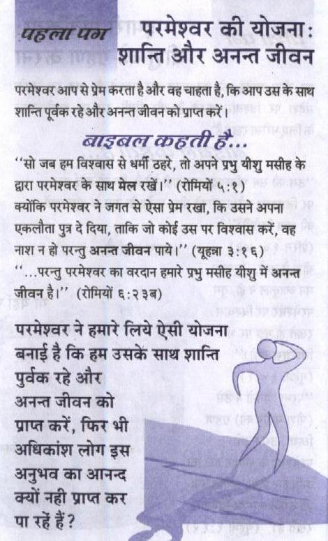
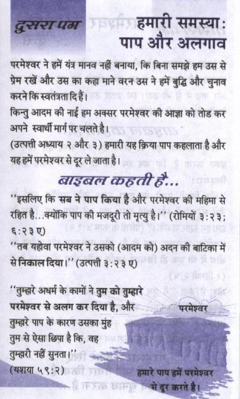
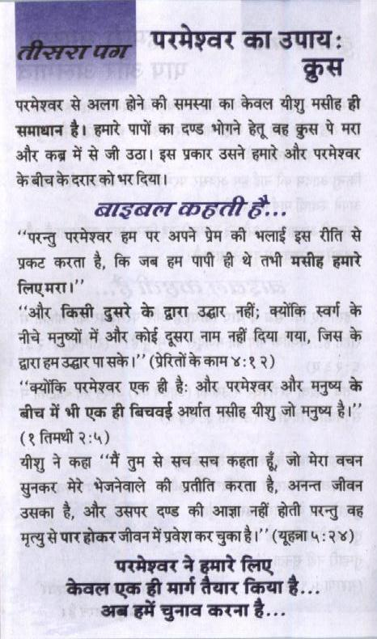
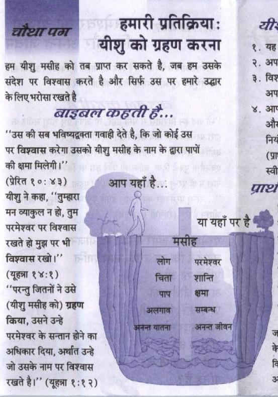
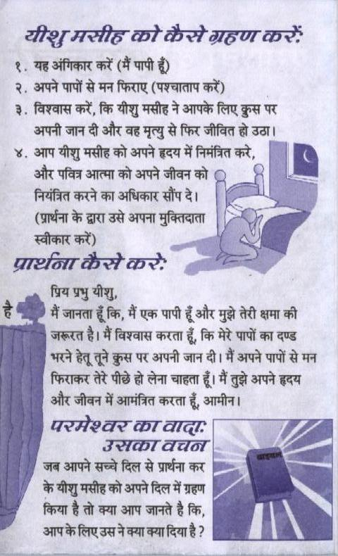
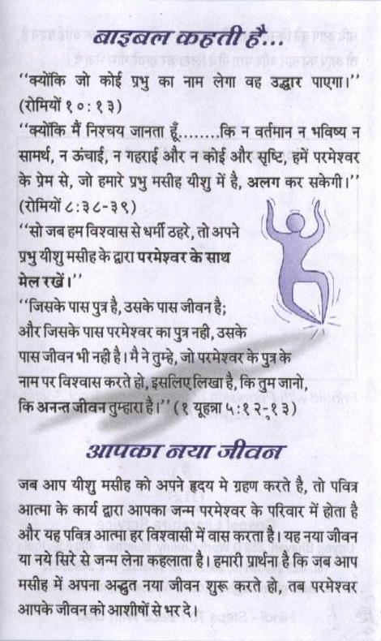
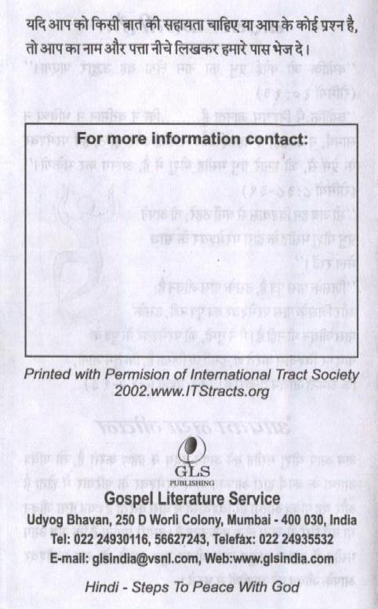
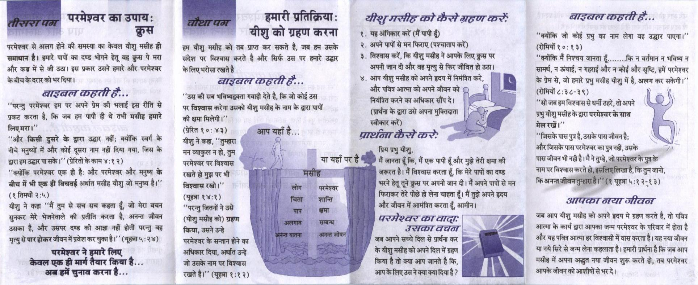
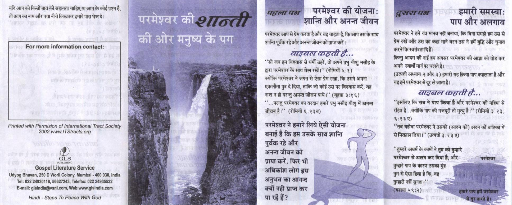

9. परमेश्वर की शांति की और मनुष्य के पग
Hindi gospel tract · 10 pages · tap a page to enlarge



















Text of this pamphlet
परमेश्वर की योजना: शान्ति और अनन्त जीवन
परमेश्वर आप से प्रेम करता है और वह चाहता है, कि आप उस के साथ
शान्ति पूर्वक रहे और अनन्त जीवन को प्राप्त करें। ASAT कह टी है...
“'सो जब हम विश्वास से धर्मी ठहरे, तो अपने प्रभु यीशु मसीह के
द्वारा परमेश्वर के साथ मेल रखें।”” (रोमियों ५:१)
क्योंकि परमेश्वर ने जगत से ऐसा प्रेम रखा, कि उसने अपना
एकलौता पुत्र दे दिया, ताकि जो कोई उस पर विश्वास करें, वह
नाश न हो परन्तु अनन्त जीवन पाये।”” (यूहन्ना ३:१६)
“SOY परमेश्वर का वरदान हमारे प्रभु मसीह यीशु में अनन्त
परमेश्वर ने हमारे लिये ऐसी योजना SS बनाई है कि हम उसके साथ शान्ति है पुर्वक रहे और ) ७
अनन्त जीवन को प्राप्त करें, फिर भी अधिकांश लोग इस अनुभव का आनन्द ae ee ; wate ret at “7 पा रहें हैं ? SS : iu
reer endl समस्या: ee पाप और अलगाव
परमेश्वर ने हमें यंत्र मानव नहीं बनाया, कि बिना समझे हम उस से प्रेम रखें और उस का कहा माने वरन उस ने हमें बुद्धि और चुनाव करने कि स्वतंत्रता दि हैं।
किन्तु आदम की नाई हम अक्सर परमेश्वर की आज्ञा को तोड कर अपने स्वार्थ मार्ग पर चलते है।
(उत्पत्ती अध्याय २ और ३) हमारी यह क्रिया पाप कहलाता है और यह हमें परमेश्वर से दूर ले जाता है।
बाइनलकहती लें... “इसलिए कि सब ने पाप किया है और परमेश्वर की महिमा से रहित है...क्योंकि पाप की मजदूरी तो मृत्यु है।'” (रोमियों ३:२३; ““तब यहोवा परमेश्वर ने उसको (आदम को) अदन की बाटिका में सेनिकाल दिया।”” (उत्पत्ती ३:२३ ए)
“तुम्हारे अधर्म के कामों ने तुम को तुम्हारे
परमेश्वर से अलग कर दिया है, और
तुम्हारे पाप के कारण उसका मुंह
परमेश्वर से अलग होने की समस्या का केवल यीशु मसीह ही समाधान है। हमारे पापों का दण्ड भोगने हेतू वह क्रुस पे मरा और कब्र में से जी उठा। इस प्रकार उसने हमारे और परमेश्वर के बीच के दरार को भर दिया।
ASAT DEH E... “परन्तु परमेश्वर हम पर अपने प्रेम की भलाई इस रीति से प्रकट करता है, कि जब हम पापी ही थे तभी मसीह हमारे “और किसी दुसरे के द्वारा san नहीं; क्योंकि स्वर्ग के नीचे मनुष्यों में और कोई दूसरा नाम नहीं दिया गया, जिस के द्वारा हम उद्धार पा सके |” (प्रेरितों के काम ४:१२) “क्योंकि परमेश्वर एक ही है: और परमेश्वर और मनुष्य के बीच में भी एक ही बिचवई अर्थात मसीह यीशु जो मनुष्य है।'' (१ तिमथी २:५) यीशु ने कहा “मैं तुम से सब सच कहता हूँ, जो मेरा बचन सुनकर मेरे भेजनेवाले की प्रतीति करता है, अनन्त जीवन उसका है, और उसपर दण्ड की आज्ञा नहीं होती परन्तु वह मृत्यु से पार होकर जीवन में प्रवेश कर चुका है।”” (यूहन्ना ५: २४)
परमेश्वर ने लिए, केवल एक ही मार्ग तैयार किया है... अब हमें चुनाव करना है...
हमारी प्रतिक्रिया: यी: यीशु को ग्रहण करना. ९. कह हम यीशु मसीह को तब प्राप्त कर सकते है, जब हम उसके २. अप संदेश पर विश्वास करते है और सिर्फ उस पर हमारे उद्धार. ३- विश के लिए भरोसा रखते है ci
“'उस की सब भविष्यद्वक्ता गवाही देते है, कि जो कोई उस fr पर विश्वास करेगा उसको यीशु मसीह के नाम के द्वारा पापों की क्षमा मिलेगी।” a यीशु ने कहा, “तुम्हारा ( ५८ मनव्याकुलनहो, तुम sl परमेश्वर पर विश्वास | | रखते हो मुझ पर भी विश्वास vat |’ (यूहन्ना १४:१) “परन्तु जितनों ने उसे (यीशु मसीह को) ग्रहण किया, उसने उन्हे परमेश्वर के सन््तान होने का अधिकार दिया, अर्थात उन्हे जो उसके नाम पर विश्वास रखते है।”” (यूहन्ना १:१२)
यीशुमसीह को कैसे ग्रहण करें
१. यह अंगिकार करें (मैं पापी हूँ)
२. अपने पापों से मन फिराए (पश्चाताप करें)
३. विश्वास करें, कि यीशु मसीह ने आपके लिए Ga पर अपनी जान दी और वह मृत्यु से फिर जीवित हो उठा।
४. आप यीशु मसीह को अपने हृदय में निमंत्रित करे, और पवित्र आत्मा को अपने जीवन को नियंत्रित करने का अधिकार सौंप दे। (प्रार्थना के द्वारा उसे अपना मुक्तिदाता स्वीकार करें)
प्रिय प्रभु यीशु, | मैं जानता हूँ कि, मैं एक पापी हूँ और मुझे तेरी क्षमा की जरूरत है। मैं विश्वास करता हूँ, कि मेरे पापों का दण्ड भरने हेतू तूने Ha पर अपनी जान दी। मैं अपने पापों से मन फिराकर तेरे पीछे हो लेना चाहता हूँ। मैं तुझे अपने हृदय और जीवन में आमंत्रित करता हूँ, आमीन। परमेश्वर का AE: उसका वचन जब आपने सच्चे दिल से प्रार्थना कर के यीशु मसीह को अपने दिल में ग्रहण किया है तो क्या आप जानते है कि, आपके लिए उस ने क्या क्या दिया है ?
“क्योंकि जो कोई प्रभु का नाम लेगा वह उद्धार पाएगा।'” (रोमियों १०: १३)
“क्योंकि मैं निश्चय जानता हूँ........कि न वर्तमान न भविष्य न सामर्थ, न ऊंचाई, न गहराई और न कोई और सृष्टि, हमें परमेश्वर के प्रेम से, जो हमारे प्रभु मसीह यीशु में है, अलग कर wT” (रोमियों ८:३८-३९)
““सो जब हम विश्वास से धर्मी ठहरे, तो अपने प्रभु यीशु मसीह के द्वारा परमेश्वर के साथ
“जिसके पास पुत्र है, उसके पास जीवन है; और जिसके पास परमेश्वर का पुत्र नही, उसके
जब आप यीशु मसीह को अपने हृदय मे ग्रहण करते है, तो पवित्र आत्मा के कार्य द्वारा आपका जन्म परमेश्वर के परिवार में होता है और यह पवित्र आत्मा हर विश्वासी में वास करता है। यह नया जीवन या नये सिरे से जन्म लेना कहलाता है। हमारी प्रार्थना है कि जब आप मसीह में अपना अद्भुत नया जीवन शुरू करते हो, तब परमेश्वर आपके जीवन को आशीषों से भर दे।
यदि आप को किसी बात की सहायता चाहिए या आप के कोई प्रश्न है, तो आप का नाम और पत्ता नीचे लिखकर हमारे पास भेज दे।
For more information contact:
Printed with Permision of International Tract Society
Gospel Literature Service E-mail: glsindia@vsni.com, Web:www.gisindia.com
Hindi - Steps To Peace With God
परमेश्वर का उपाय: परमेश्वर से अलग होने की समस्या का केवल यीशु मसीह ही समाधान है। हमारे पापों का दण्ड भोगने हेतू वह क्रुस पे मरा और कब्र में से जी उठा। इस प्रकार उसने हमारे और परमेश्वर के बीच के दरार को भर दिया। asa DEH... “परन्तु परमेश्वर हम पर अपने प्रेम की भलाई इस रीति से प्रकट करता है, कि जब हम पापी ही थे तभी मसीह हमारे “और किसी दुसरे के द्वारा san नहीं; क्योंकि स्वर्ग के नीचे मनुष्यों में और कोई दूसरा नाम नहीं दिया गया, जिस के द्वारा हम उद्धार पा सके ।”” (प्रेरितों के काम ४:१२) “क्योंकि परमेश्वर एक ही है: और परमेश्वर और मनुष्य के बीच में भी एक ही बिचवई अर्थात मसीह यीशु जो मनुष्य है।'” (१ तिमथी २:५) यीशु ने कहा “मैं तुम से सच सच कहता हूँ, जो मेरा बचन सुनकर मेरे भेजनेवाले की प्रतीति करता है, अनन्त जीवन उसका है, और उसपर दण्ड की आज्ञा नहीं होती परन्तु वह मृत्यु से पार होकर जीवन में प्रवेश कर चुका है।”” (यूहन्ना ५: २४)
परमेश्वर ने लिए. केवल एक ही मार्ग तैयार किया है. अब हमें चुनाव करना है
हमारी wien: थीशुमसीह को कैसे ग्रहण करें: यीशु को ग्रहण करना. ६. यह अंगिकार करें (मै पापी हूँ
हम यीशु मसीह को तब प्राप्त कर सकते है, जब हम उसके. २* अपने पापों से मन फिराए (पश्चाताप करें)
संदेश पर विश्वास करते है और सिर्फ उस पर हमारे उद्धार ३. विश्वास करें, कि यीशु मसीह ने आपके लिए Fa पर Sposa अपनी जान दी और वह मृत्यु से फिर जीवित हो उठा।
बाइबल कहती हैं .. ४. आप यीशु मसीह को अपने हृदय में निमंत्रित करे,
और पवित्र आत्मा को अपने जीवन को “उस की सब भविष्यद्वक्ता गवाही देते है, कि जो कोई उस dnc करने का अधिकार सौंप दे। Ace पर विश्वास करेगा उसको यीशु मसीह के नाम के द्वारा पापों
शा मिलेगी /" री उसे अपना मुक्तिदाता
मन व्याकुल न हो, तुम प्रिय प्रभु यीशु,
परमेश्वर पर विश्वास मैं जानता हूँ कि, मैं एक पापी हूँ और मुझे तेरी क्षमा की रखते हो मुझ पर भी जरूरत है। मैं विश्वास करता हूँ, कि मेरे पापों का दण्ड विश्वास रखो।'' भरने हेतू तूने कुस पर अपनी जान दी। मैं अपने पापों से मन (यूहन्ना १४:१) फिराकर तेरे पीछे हो लेना चाहता हूँ। मैं तुझे अपने हृदय “परन्तु जितनों ने उसे और जीवन में आमंत्रित करता हूँ, आमीन।
(यीशु मसीह को) ग्रहण परमेश्वर का AGE: 6S किया, उसने उन्हे उसकावचन ० परमेश्वर के सन््तान होने का जब आपने सच्चे दिल से प्रार्थना कर
अधिकार दिया, अर्थात उन्हे के यीशु मसीह को अपने दिल में ग्रहण
जो उसके नाम पर विश्वास किया है तो क्या आप जानते है कि,
आपके लिए उस ने क्या क्या दिया है ?
“क्योंकि जो कोई प्रभु का नाम लेगा वह उद्धार पाएगा।” (रोमियों १०: १३)
“क्योंकि मैं निश्चय जानता हूँ........कि न वर्तमान न भविष्य न सामर्थ, न ऊंचाई, न गहराई और न कोई और सृष्टि, हमें परमेश्वर के प्रेम से, जो हमारे प्रभु मसीह यीशु में है, अलग कर wT” (रोमियों ८:३८-३९) ॥
““सो जब हम विश्वास से धर्मी ठहरे, तो अपने प्रभु यीशु मसीह के द्वारा परमेश्वर के साथ
“जिसके पास पुत्र है, उसके पास जीवन है; और जिसके पास परमेश्वर का पुत्र नही, उसके
जब आप यीशु मसीह को अपने हृदय मे ग्रहण करते है, तो पवित्र आत्मा के कार्य द्वारा आपका जन्म परमेश्वर के परिवार में होता है और यह पवित्र आत्मा हर विश्वासी में वास करता है। यह नया जीवन या नये सिरे से जन्म लेना कहलाता है। हमारी प्रार्थना है कि जब आप मसीह में अपना अद्भुत नया जीवन शुरू करते हो, तब परमेश्वर आपके जीवन को आशीषों से भर दे।
यदि आप को किसी बात की सहायता चाहिए या आप के कोई प्रश्न है, तो आप का नाम और पत्ता नीचे लिखकर हमारे पास भेज दे।
For more information contact:
Printed with Permision of International Tract Society 2002. www.!TStracts.org
Gospel Literature Service E-mail: glsindia@vsni.com, Web:www.gisindia.com
Hindi - Steps To Peace With God
परमेश्वर की योजना: शान्ति और अनन्त जीवन
परमेश्वर आप से प्रेम करता है और वह चाहता है, कि आप उस के साथ शान्ति पूर्वक रहे और अनन्त जीवन को प्राप्त करें।
बाइबन BE ले... “ay जब हम विश्वास से धर्मी set, तो अपने प्रभु यीशु मसीह के द्वारा परमेश्बर के साथ मेल रखें।”” (रोमियों ५:१) क्योंकि परमेश्वर ने जगत से ऐसा प्रेम रखा, कि उसने अपना एकलौता पुत्र दे दिया, ताकि जो कोई उस पर विश्वास करें, वह नाश न हो परन्तु अनन्त जीवन पाये।”” (यूहन्ना ३:१६) “SOY परमेश्वर का वरदान हमारे प्रभु मसीह यीशु में अनन्त जीवन है।'” (रोमियों ६:२३ब)
परमेश्वर ने हमारे लिये ऐसी योजना o बनाई है कि हम उसके साथ शान्ति _५/ >)
अधिकांश लोग इस | V4 अनुभव का आनन्द 3
क्यों नही प्राप्त कर Pie पा रहें हैं? Ge SESS
परमेश्वर ने हमें यंत्र मानव नहीं बनाया, कि बिना समझे हम उस से प्रेम रखें और उस का कहा माने वरन उस ने हमें बुद्धि और चुनाव करने कि स्वतंत्रता दि हैं।
किन्तु आदम की नाई हम अक्सर परमेश्वर की आज्ञा को तोड कर अपने स्वार्थ मार्ग पर चलते है।
(उत्पत्ती अध्याय २ और ३) हमारी यह क्रिया पाप कहलाता है और यह हमें परमेश्वर से दूर ले जाता है।
“इसलिए कि सब ने पाप किया है और परमेश्वर की महिमा से रहित है...क्योंकि पाप की मजदूरी तो मृत्यु है।'' (रोमियों ३:२३; ““तब यहोवा परमेश्वर ने उसको (आदम को) अदन की बाटिका में सेनिकाल fee |" (उत्पत्ती ३:२३ ए)
“'तुम्हारे अधर्म के कामों ने तुम को तुम्हारे परमेश्वर से अलग कर दिया है; और तुम्हारे पाप के कारण उसका मुंह w तुम से ऐसा छिपा है कि, वह तुम्हारी नहीं सुनता। (AMT ५९:२)
Text extracted automatically from the scanned pamphlet; please refer to the page images for the exact wording.